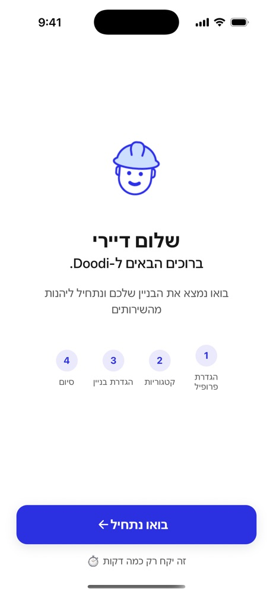
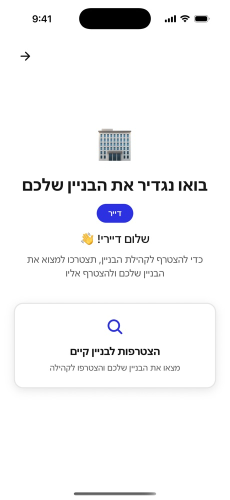
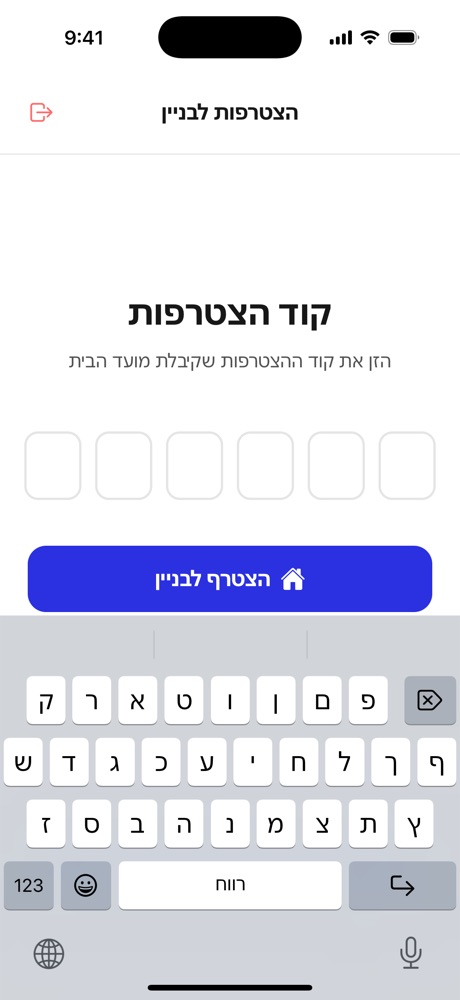
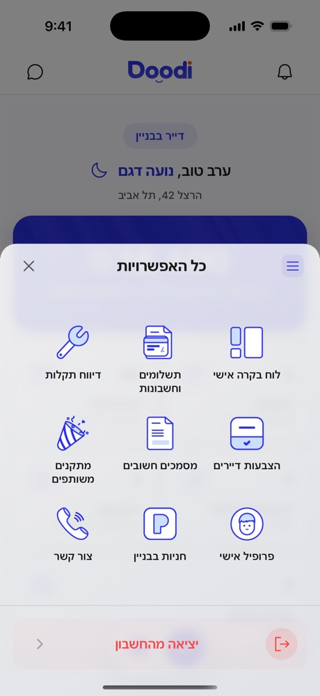
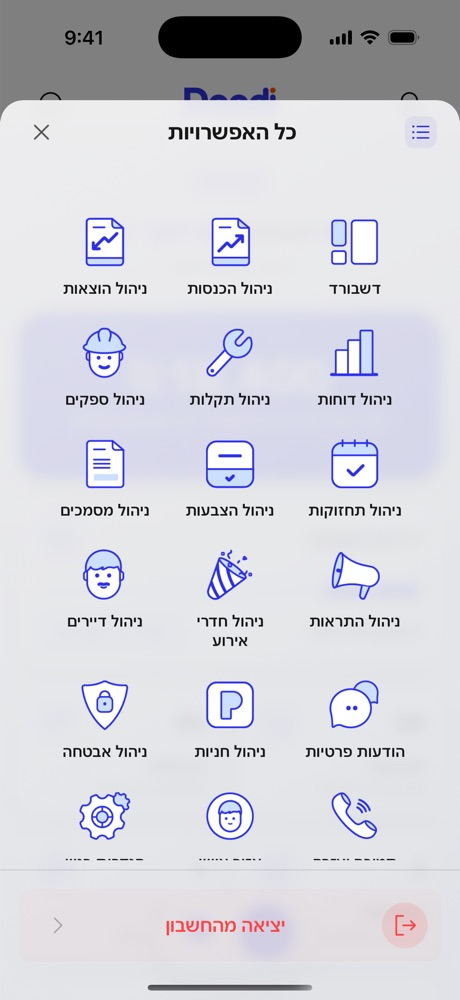
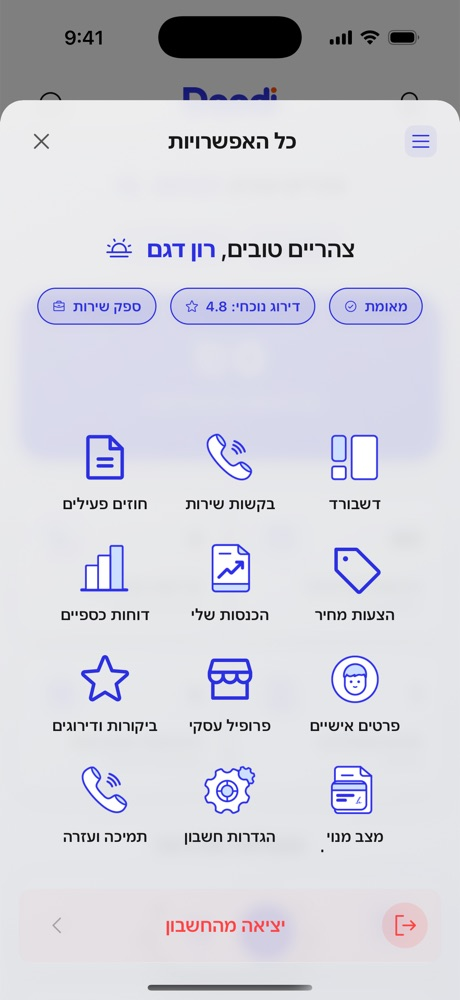
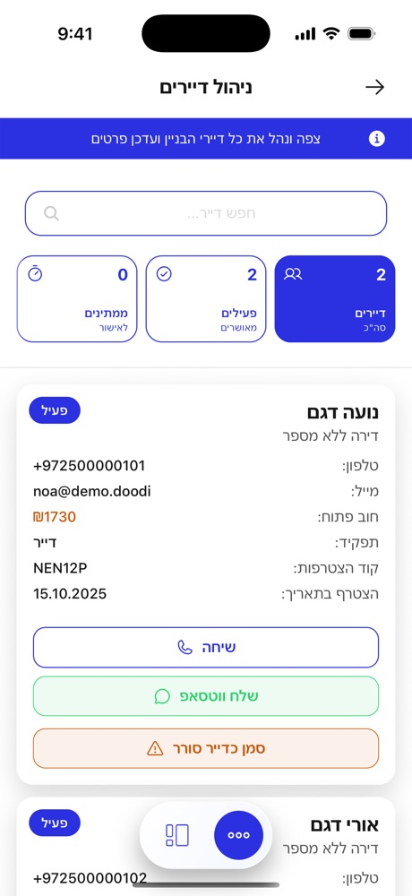
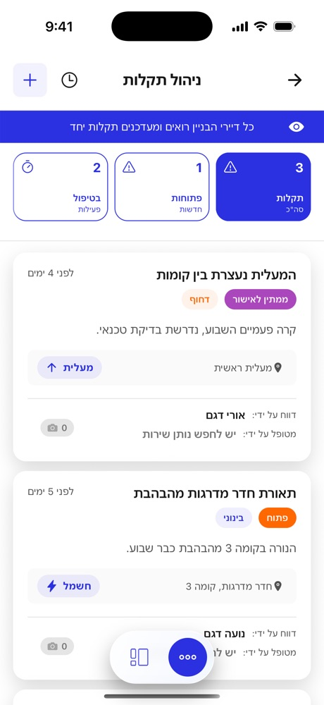
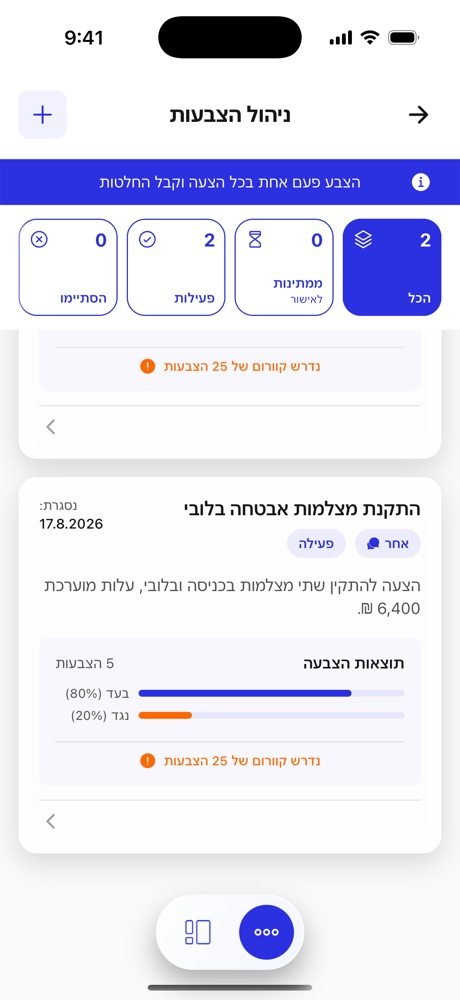
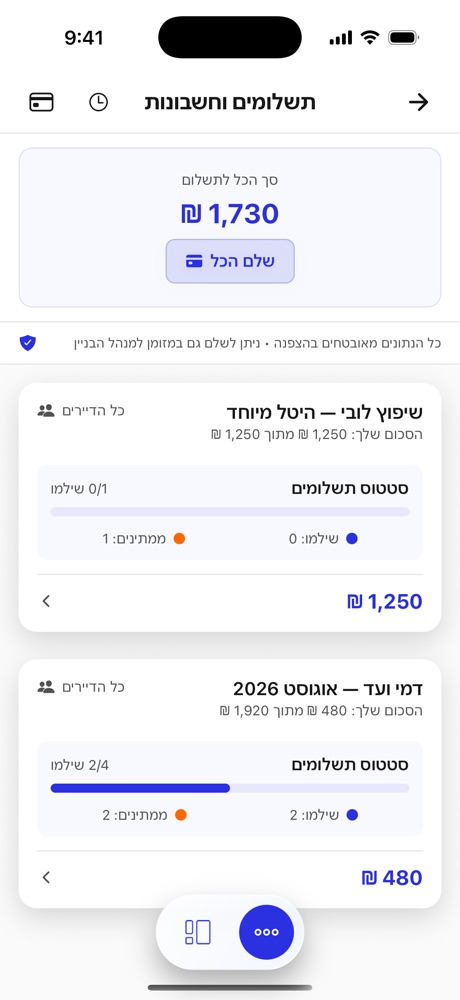

The screens
Joining a building
First run is the whole product in miniature. A four-step wizard sets up the profile, then asks the one question that decides everything else — which building are you in? A resident joins with a six-digit code the committee shares; a committee member creates the building instead. Getting this wrong means a resident who never reaches the app at all, so it's a wizard rather than a settings screen.



Three roles, three dashboards
The same design system, three different jobs. A resident sees the building fund, their dues, open faults and votes waiting on them. A committee member sees registered residents against total apartments, income and expenses awaiting approval, and can share the join code. A service provider sees pending calls, monthly revenue, scheduled maintenance and contracts. Same shell, different permissions, different numbers.


Three menus, one grammar
Permissions are clearest in the menu. A resident gets nine sections; a committee member gets eighteen — every one of them a management surface; a service provider gets a business set: contracts, quotes, earnings, reviews. The sheet, the grid and the typography never change, so moving between roles never feels like a different product.



The committee's working screens
Residents is a working tool, not a directory — outstanding debt, join code and one-tap call or WhatsApp per resident. Faults carries priority and status as separate badges so urgency and progress read independently. Votes shows a live tally against the quorum line, because a decision taken without quorum isn't a decision.



One number, three places
The same 1,730 ₪ appears as the resident's balance due, as a line on their dashboard, and as outstanding debt on the committee's resident card. Charges group by billing run — 2 of 4 paid on the August dues, 0 of 1 on the lobby levy — so the committee reads collection progress without opening a report.
